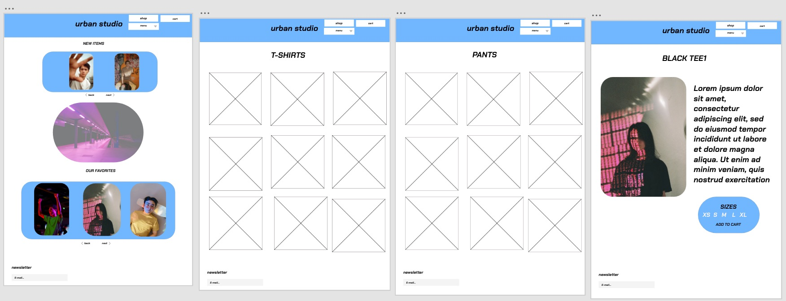
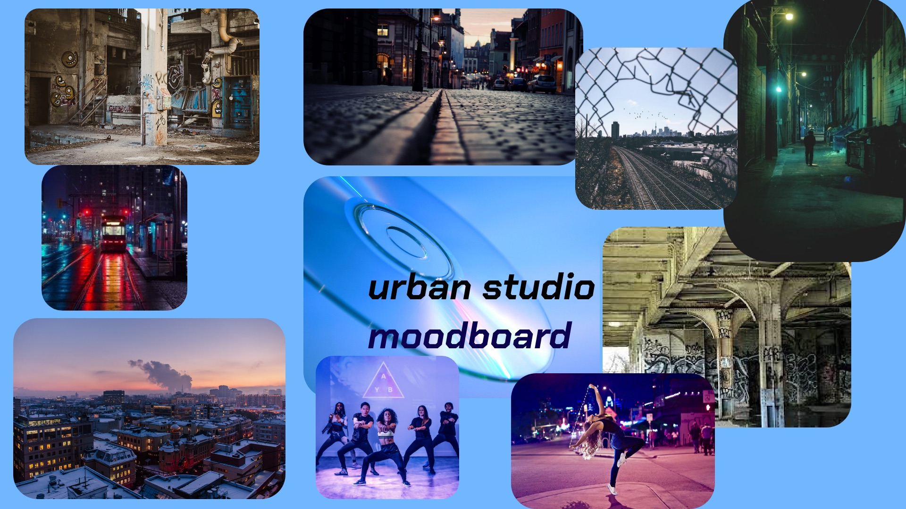
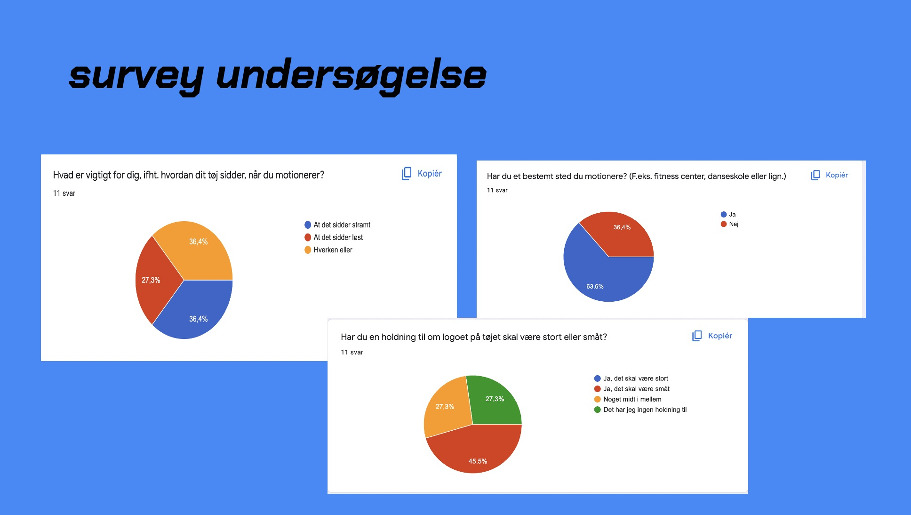

Ux
Prototype & research
I grundlæggende ux fik vi en case, som lød på, at vi skulle designe en hjemmeside som hovedsageligt solgte T-shirts men også få andre produkter. Derudover skulle vi også have en USP (unique selling point) for vores shop og have en klar idé om, hvad vores målgruppe var. For at undersøge hvilke behov vores brugere har til t-shirts, blev vi introduceret for to research-metoder: Interview og survey research. De indsigter vi fik samlet ind, skulle vi bruge videre i vores udvikling af produkt og prototype. Billederne nedenfor viser min prototype, moodboard for shoppen og mine indsigter fra min survey research.

Prototype

Moodboard for website
